Cross-Validation Results: Automatic Report and Interpretation
Metrics by Fold
| Fold |
R2 |
MSE |
RMSE |
MAE |
| 1 |
0.040360 |
843.278777 |
29.039263 |
23.228109 |
| 2 |
-0.010504 |
499.366144 |
22.346502 |
18.017236 |
| 3 |
-1.261833 |
548.461216 |
23.419249 |
18.541856 |
| 4 |
0.068485 |
213.156153 |
14.599868 |
12.041474 |
| 5 |
-0.946590 |
1664.806717 |
40.802043 |
32.470799 |
Feature Importance (mean ± std)
| feature |
mean_importance |
std_importance |
| TL |
0.492653 |
0.074784 |
| TR |
0.102868 |
0.035121 |
| OR |
0.083622 |
0.044400 |
| PL |
0.063022 |
0.024170 |
| PR |
0.055027 |
0.031897 |
| OL |
0.050819 |
0.015588 |
| FL |
0.050502 |
0.015298 |
| CL |
0.048428 |
0.019008 |
| FR |
0.026591 |
0.012434 |
| CR |
0.026469 |
0.014774 |
Main Plots
feature_importances_mean_std.png
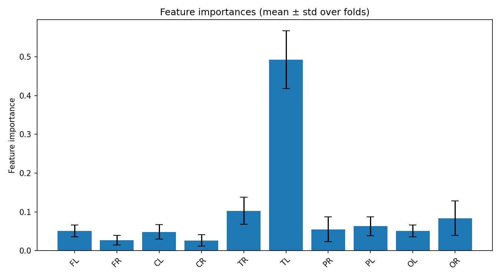
feature_importances_correlation_heatmap.png
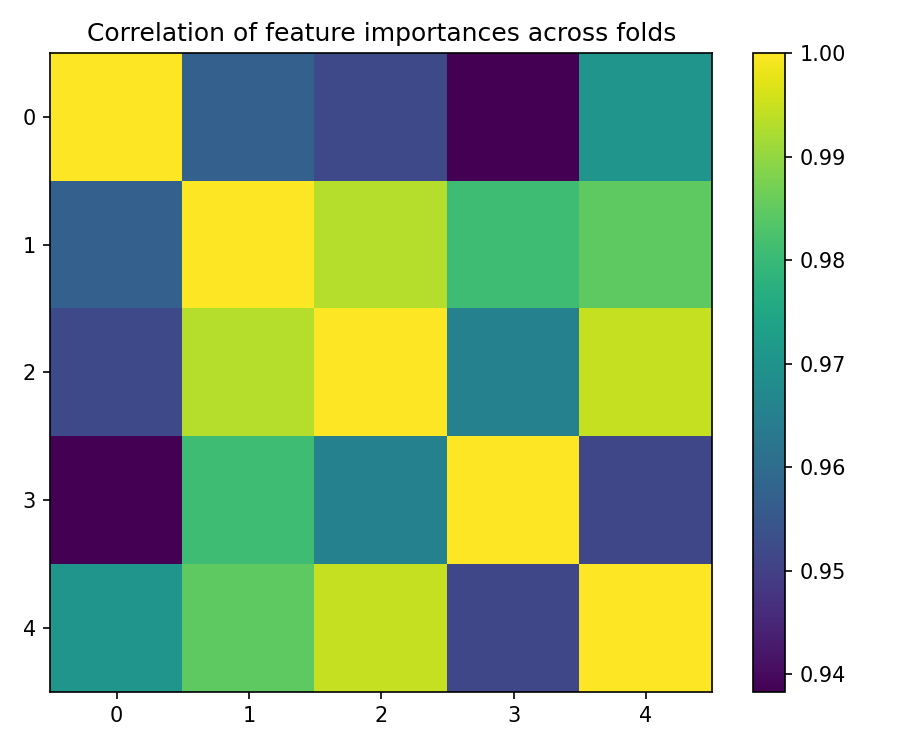
best_fold_4_feature_importances.png
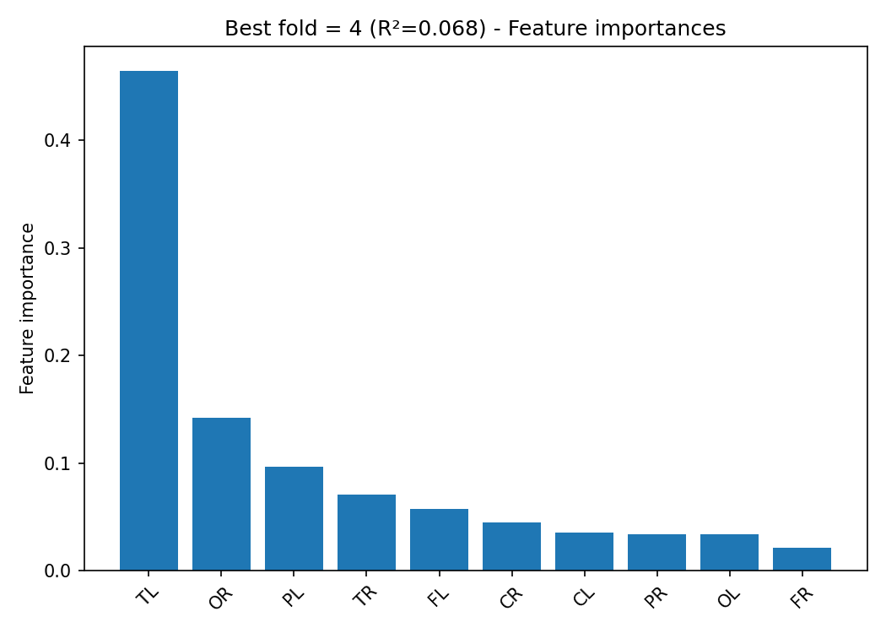
True vs Predicted Scatter Plots (by fold)
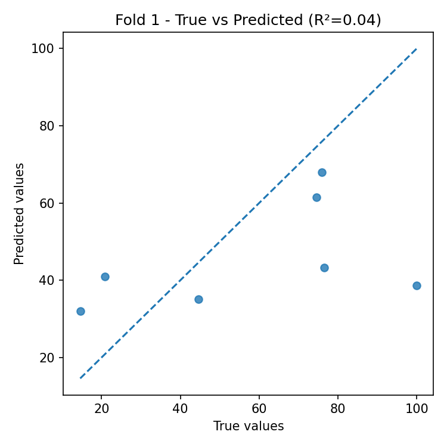
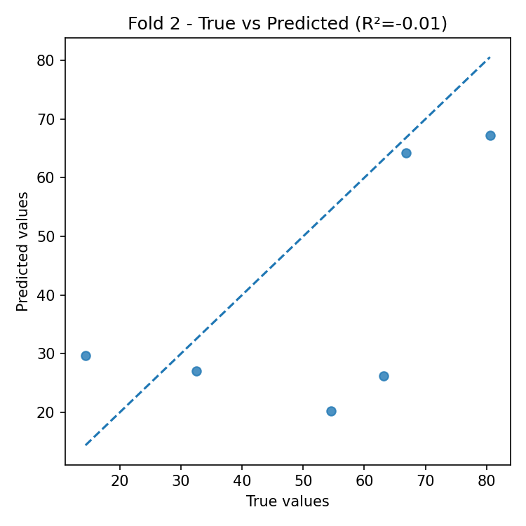
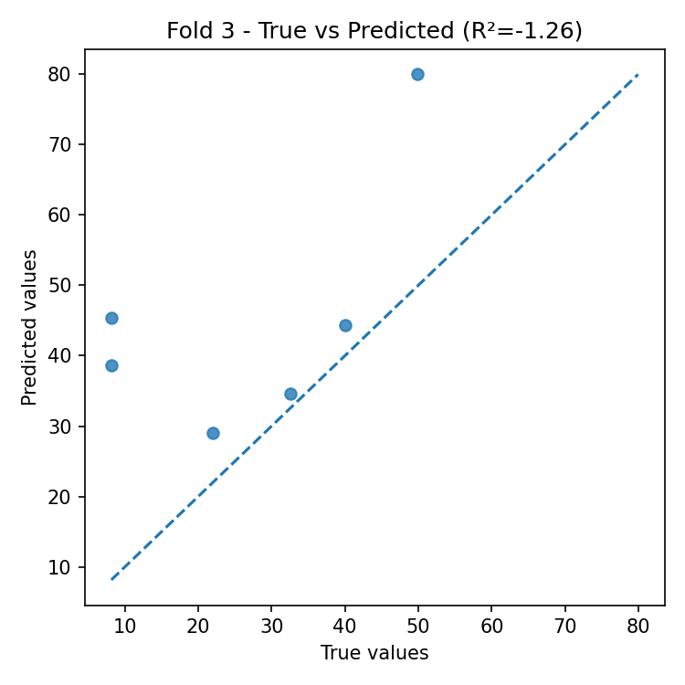
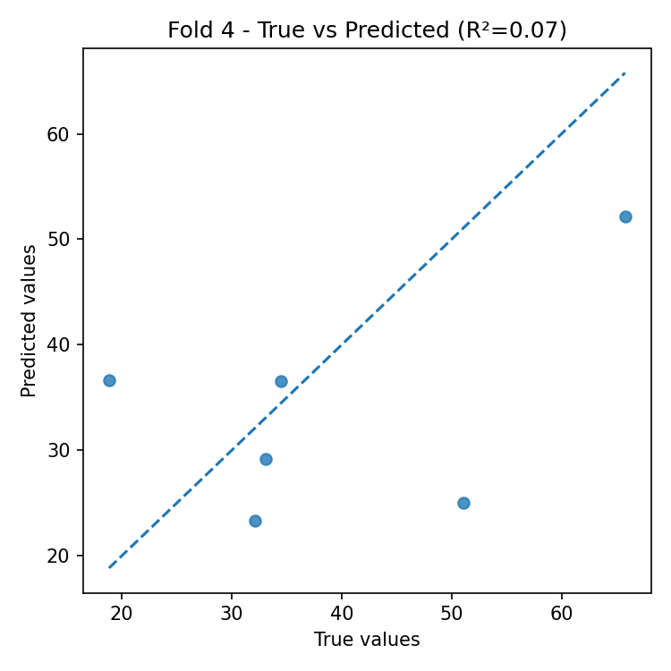
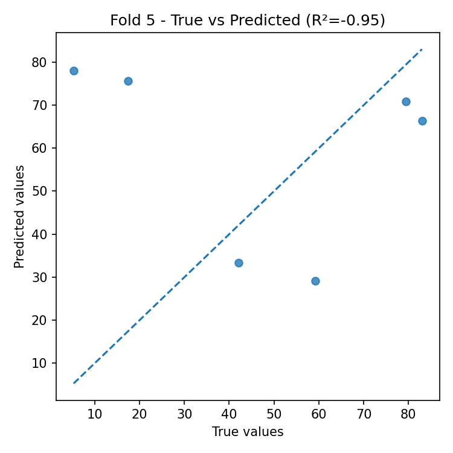
Residual Plots (by fold)
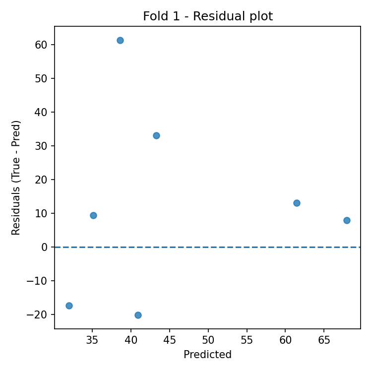
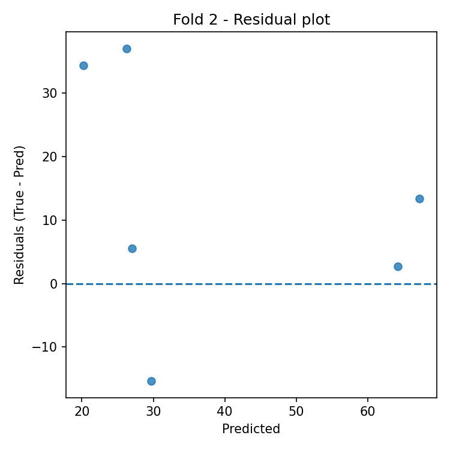
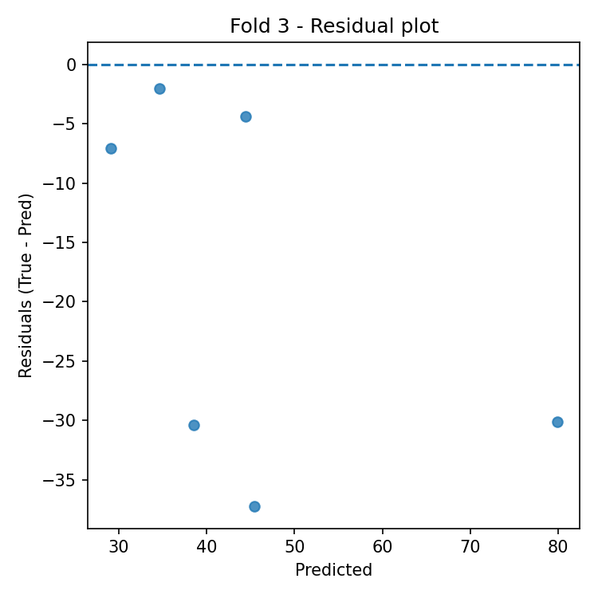
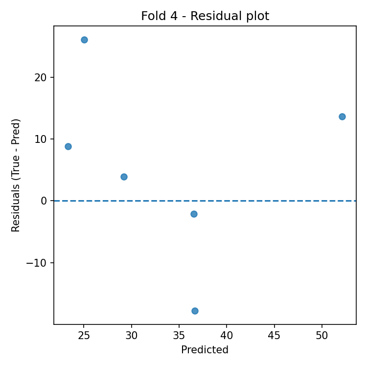
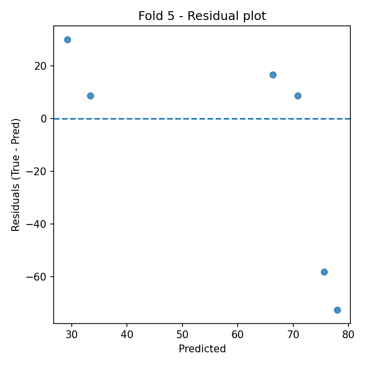
Automatic Interpretation
Overall Performance
- Mean R² across folds: -0.422 (± 0.633).
- Average error: RMSE = 26.041, MAE = 20.860 (same unit as target variable).
Model Stability
- R² variability across folds is high (std = 0.633).
- Average feature importance stability across folds: 0.029 (lower = more stable).
Most Important Features (average across all folds)
- Top-3: TL (0.493), TR (0.103), OR (0.084).
Best Fold
- Best fold: 4 with R² = 0.068.
- In the best fold, the most important features are: TL (0.464), OR (0.142), PL (0.097).
Residual Analysis (best fold)
- Residuals–predictions correlation: -0.184 (0 ≈ absence of linear bias).
- |Residuals|–predictions correlation: -0.069 (positive values indicate possible heteroscedasticity).
- Outliers (|res| > 3·std): 0.